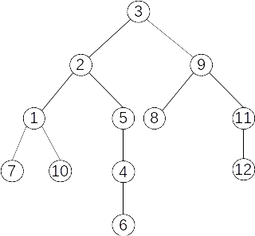

Grafuri

Teoria grafurilor este un domeniu al matematicii care studiază relațiile dintre obiecte.
Obiectele sunt reprezentate de noduri (sau vârfuri), iar relațiile dintre ele sunt reprezentate de muchii (sau arce).
Un grafic (sau graf) este o structură compusă din noduri și muchii. Iată câteva concepte fundamentale din teoria grafurilor:
- Definiții de bază:
- Noduri (Vârfuri): Obiectele din grafic.
- Muchii: Conexiunile dintre noduri.
- Muchii neorientate: Conexiuni bidirecționale (fără direcție specifică).
- Muchii orientate: Conexiuni direcționale (au o direcție specifică).
- Tipuri de grafuri:
- Grafuri neorientate: Grafuri în care toate muchiile sunt neorientate.
- Grafuri orientate (Digrafuri): Grafuri în care toate muchiile sunt orientate.
- Grafuri ponderate: Grafuri în care muchiile au asociate valori numerice (ponderi).
- Proprietăți ale grafurilor:
- Gradul unui nod: Numărul de muchii incidentale la un nod. În grafurile orientate, se face diferența între gradul de intrare și gradul de ieșire.
- Ciclu: Un drum care începe și se termină la același nod fără a repeta muchii.
- Conectivitate: Un graf este conex dacă există un drum între orice două noduri.
- Arbore: Un graf conex fără cicluri.
- Algoritmi importanți:
- Algoritmul lui Dijkstra: Găsește cel mai scurt drum într-un graf ponderat.
- Algoritmul lui Prim: Găsește arborele de acoperire minimă într-un graf ponderat.
- Algoritmul lui Kruskal: Găsește arborele de acoperire minimă printr-o abordare a muchiilor ordonate.
- Aplicații ale teoriei grafurilor:
- Rețele de calculatoare: Modelarea și analiza rețelelor de calculatoare.
- Rute de transport: Optimizarea rutelor de transport (aerian, rutier, feroviar).
- Rețele sociale: Studiul interacțiunilor sociale și influența acestora.